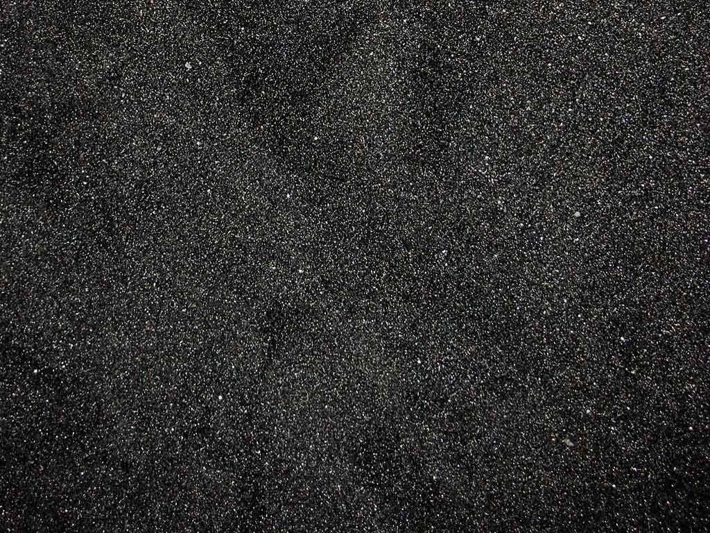

Back to home page
One of our most exotic sand brand color brands!
Our black sand is bred and chemically created by taking existing exotic
sands and infusing color through the use of our own patented sickle-cell-seeping chemical
process. We use our gray sand for the basis of the process and seep in sickle-cells along with
Sharpie™ juice to create a wonderfully deep and vibrant black that pleases the eye of all
exotic sand collectors.

Customer Reviews:
WWIIreenactorman says, "Never felt comfort like this murdering my fellow men until I tried this sand."
AshKetchum says, "My Sandshrew has become much more powerful from this sand!"